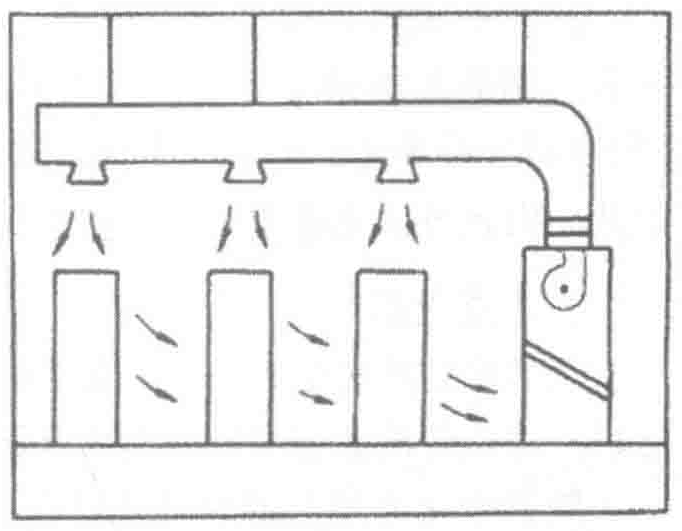

- 可以合理布置数据中心机房线缆和管道，保证美观性。
- 机组没有连接通风管道，所以方便维修和日常维护。
同时需要注意的是：
- 采用下送风方式时防静电地板高度宜保持在500mm以上，且避免有过多的障碍物在地板下；
- 地板下地面及四周墙面应铺设保温材料，以防止冷量损失和下层天花板的结露。
这种送风方式在实际应用中，可以满足4～6kW的机柜气流需求。由于地板通风率不会达到100%，而且地板出风口速度也不宜高于3m/s，故通常每块地板的送风量不大于3000m3/h；如果局部机柜的负荷过大，比如负荷达到15kW，此时通过计算，机柜需要约4500m3/h的风量。那么这个时候就会出现单个送风口风量不足而出现局部热点的情况；在不改变送风形式下，可以选择安装ADU装置，即带主动送风设备的通风地板强制增加风量来改善送风效果。
2. 上送前回

当主机房较小、机柜功率低、机房无防静电地板、防静电地板高度过低（≤200mm）或机房防静电地板下部有过多障碍物（如强弱电线槽等）妨碍通风时，可考虑选用这种送风方式。上送前回的机组一般都会在送风口处另行加上风帽使用，可以调整送风方向，并使送风口高于机柜设备，避免被机柜挡住气流。或者加装一套送风管，便于空气向更远距离输送，使风量能在机房内均匀分布，如图4-14所示。
这种送风方式的特点是：
- 无须设置送风专用架空地板，减少了施工周期和工程投资。
- 地板下没有机械装置，安装维护更加方便。
- 安装风管可以使送风距离更远，满足末端机柜的风量要求。
- 由于热空气会自然上浮，只适用于散热量较小的数据中心。
在安装时需要注意：
- 如果加装风管，则风管与机组需做软连接。
- 如要加消声器或送风管道过长，需相应增大机组的机外余压，以保证风量要求。
4.4.3 行列级送风
当机柜的负荷≥8kW时，房间级送风的降温效果不能保证，有可能会出现送风量不够的情况，此时用送风距离较短的行列级空调能更好地将冷量送至服务器，相对于房间级送风，风机的功耗也有下降。